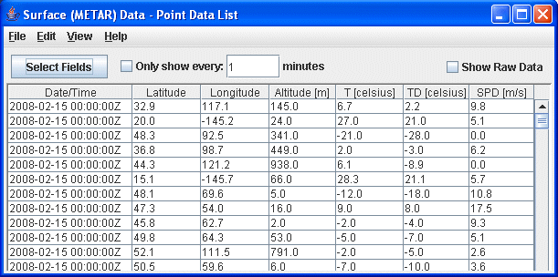
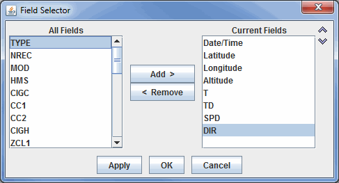
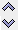

Overview
The Point Data List Control shows a set of observation data in a textual list format. This control is accessed by selecting the Point Data field and the Point Data List display.

Image 1: Point Data List Window
Image 1: Point Data List Window
Properties
- - Opens a Field Selector window that allows for selecting which Fields are listed in the table.
- Only Show Every - Allows for setting a time interval where data will be listed only once every N minutes. This feature can be used by selecting the Only show every checkbox, typing a numerical value into the field, and pressing Enter.
- Show Raw Data - Displays the data in its raw format in the chart before any rounding, formatting, or changing of the native units is done to the data by McIDAS-V. This, for example, may break up the SPD field into individual U and V components.
The button opens a Field Selector window that allows for determining which fields are included in the table:

Image 2: Field Selector Window to Add or Remove Fields from the Point Data List Window
Image 2: Field Selector Window to Add or Remove Fields from the Point Data List Window
Properties
- All Fields - Lists all of the fields that are included in the data source.
- Current Fields - Lists the fields that are included in the chart.
-
 - Moves the selected Field from the All Fields menu to the Current Fields menu.
- Moves the selected Field from the All Fields menu to the Current Fields menu. - - Moves the selected Field from the Current Fields menu to the All Fields menu.
-  - Shifts the selected Current Fields item up or down, changing its position in the chart.
Menus
Many of the menu items seen utilizing this display are standard options that can be found in the Menus section of the Layer Controls page. However, there is one option that is unique to this display.
The File menu has this unique option:
- Save->Export Table to CSV... - Allows for saving the data in the Comma-Separated Values (*.csv) format.